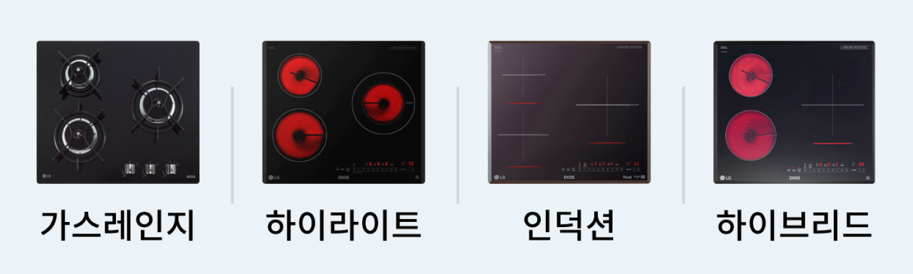
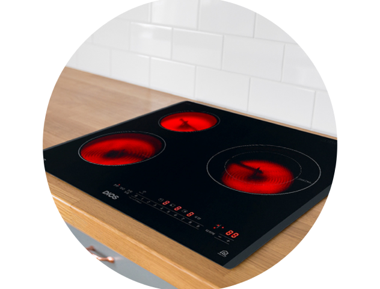
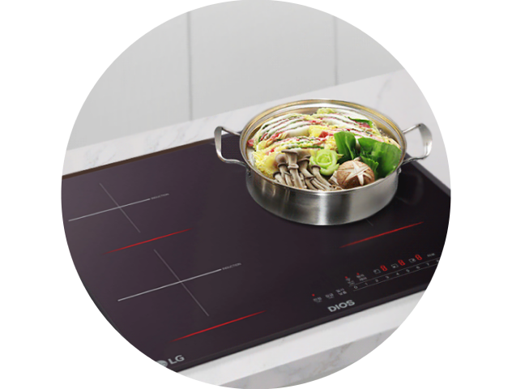
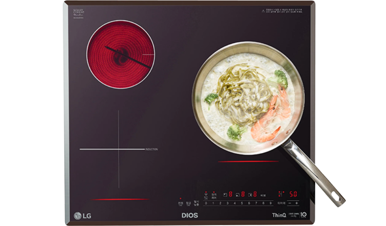
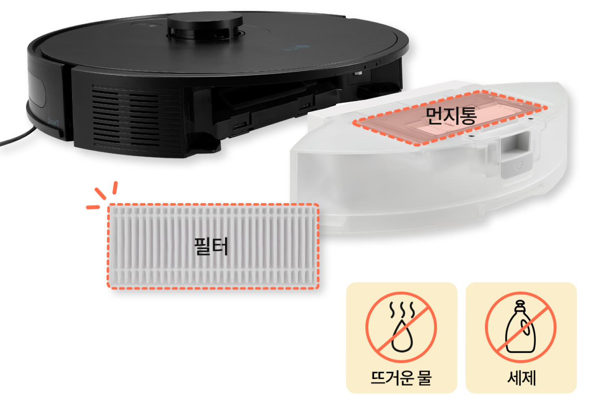
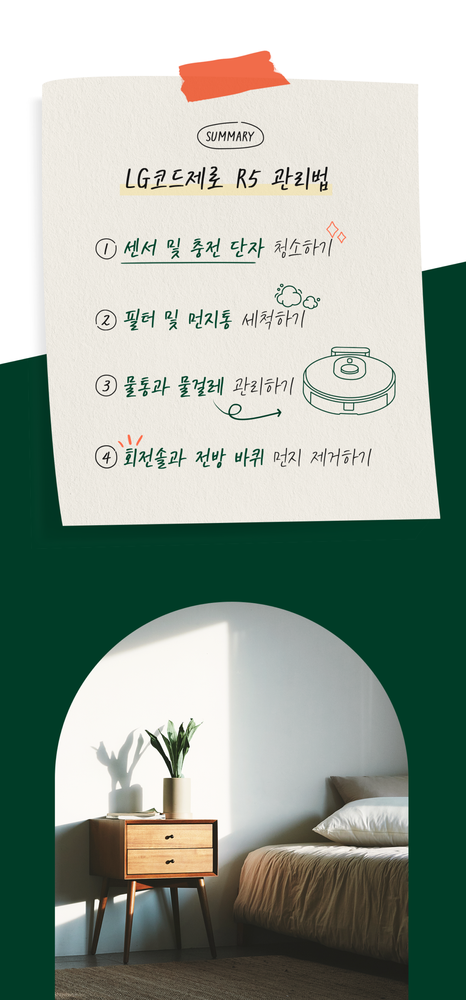

주방전기레인지


보다 더 스마트한 일상
LG ThinQ의 시작
보다 더 스마트한 일상, LG ThinQ
씽큐는 사람과 가전을 AI 기술로 연결하여 더 편리하고 놀라운 일상을 만드는 LG전자의 스마트 홈 플랫폼입니다.
*본 콘텐츠는 ThinQ 앱의 콘텐츠입니다.
최근, 실내 환경오염에 대한 관심이 높아지면서 건강관리 가전에 대한 관심도 높아졌죠. 가스레인지를 주로 사용하던 한국도 점차 전기레인지를 선호하고 있어요.
전기레인지를 구입하셨거나, 이미 가스레인지를 사용하고 있지만 전기레인지가 어떤 것인지 궁금해하시는 분들을 위해 쿡탑의 종류와 특장점들을 알아볼게요.
쿡탑 종류
이렇게 구분해요!
가열 방식의 차이로만 이해하기 쉬우나 효율과 사용성 그리고 유해가스 배출량에서 결정적인 차이가 있어요.


가스레인지
LNG나 LPG 등의 가스로 버너에 불꽃을 주면 점화된 가스가 연소되며 불이 생성되는데, 이 불로 용기에 직접적인 열을 전달하여 가열시키는 방식이에요.

전기레인지
하이라이트
사진에서 보이는 것처럼 인덕션과 달리 버너가 빨갛게 보이는 특징이 있어요. 하이라이트는 전구와 같은 원리로 히터에 전류가 흐르면 전기저항으로 열을 발생시켜요. 발생된 열은 글라스 상판으로 전달되고, 글라스에 전달된 열은 용기에 전달하여 가열시키는 전도열 원리죠.

전기레인지
인덕션
사진에서 보이는 것처럼 하이라이트와 달리 버너가 빨갛게 보이지 않는 것이 인덕션 입니다. 인덕션은 코일에 전류가 흐르면 자기장이 형성되고, 이때 용기 속 철 성분과 만나면서 전자기 유도 현상이 생겨 열이 발생되죠. 하이라이트와는 다르게 상판 글라스를 거치지 않고 용기에 바로 열을 전달시켜 가열시키는 원리예요.

하이브리드
인덕션과 하이라이트의 화구를 조합한 제품이에요. 내열유리 냄비처럼 사용하면 안되는 용기로 요리할 때는 화구를 사용하면 되겠죠!
01
빈틈없는 주행을 위해
빈틈없는 주행을 위해
센서 및 충전 단자 청소하기
로봇청소기의 원활한 주행을 위해서 센서와 충전 단자에 대한 주기적인 청소가 필요해요.

-
로봇청소기의 주 전원 스위치를 꺼주세요.
-
부드러운 천과 면봉으로 라이다 센서, 충전용 적외선 센서, 낭떠러지 감지 센서를 닦아주세요.
-
충전대의 전원 플러그를 뽑은 후 부드러운 천이나 브러시로 충전 단자를 청소해 주세요.
-
부드러운 천으로 흡입부 안쪽의 먼지 센서를 청소하세요.
02
흡입력 유지를 위해
흡입력 유지를 위해
필터 및 먼지통 세척하기
먼지통이 먼지로 꽉 차거나 필터가 막혀 있으면 로봇청소기의 흡입력이 약해질 수 있는데요. 흡입력 유지를 위해 이렇게 관리해 볼까요?

-
먼지통을 비워주세요.
-
필터를 꺼내서 청소용 솔로 청소해 주세요.
-
먼지통, 필터를 흐르는 물로 씻어주세요. 이때 부품이 손상 될 수 있으니 뜨거운 물이나 세제 사용은 NO!
-
완전히 건조 후 순서대로 조립해서 사용하세요.
*올인원타워를 포함한 로봇청소기를 사용 중이라면 1~2개월에 한 번 먼지봉투 교체도 잊지 마세요!
03
냄새 예방을 위해
냄새 예방을 위해
물통과 물걸레 관리하기
물이 닿는 부분인 만큼 냄새가 나지 않도록 물통과 물걸레는 꼼꼼한 위생 관리가 필요해요.
*물걸레 기능이 있는 일부 모델에 해당함
-
청소 후 물통을 비우고 물걸레를 깨끗이 세척해 주세요.
-
물통을 세운 상태에서 토출구에 휴지, 헝겊 등을 붙여 잔수를 제거해 주세요.
-
물통의 물을 최대한 털고, 마개 쪽으로 물통을 기울여 물을 모은 다음, 휴지, 헝겊 등의 위에 엎어주세요.
-
물통과 걸레, 걸레판은 그늘에서 완전히 건조한 후 보관 하세요.
04
소음을 줄이고, 안정적인 주행을 위해
소음을 줄이고, 안정적인 주행을 위해
회전솔과 바퀴 먼지 제거하기
청소를 자주 하다 보면 하부에 있는 회전솔과 바퀴에 먼지가 쌓이게 되는데요. 이럴 땐 다음과 같이 관리해 보세요.

-
본체에서 회전솔을 분리해 한쪽의 롤러를 뺀 후 이물질을 제거하세요. 측면 회전솔도 분리가 가능하니 함께 청소해 주면 좋아요.
-
전방 바퀴는 당겨서 분리한 후 이물질을 제거해 주세요. (이때 전방 바퀴를 물에 헹구면 고장이 날 수 있으니 주의하세요.)
SUMMARY
LG코드제로 R5 관리법

Point 01
검증된 레드 와인 고르기
위스키나 소주처럼 알코올 함량이 높고 풍미가 강한 술을 좋아한다면 레드 와인 중 카베르네 소비능(Cabernet Sauvignon), 쉬라즈(Shiraz)를 추천해요
카베르네 소비놈은 비즈니스 와인 선택 시 많이 마시는 품종 중 하나로 덤한 맛이 강한 것이 특징이에요 특히 이 품종은 오랫동안 보관과 숙성이 가능한 장기 숙성 와인으로 통하는데.미국 캘리포니아 카베르네 소비늄은 특유의 바닐라, 오크터치 풍미가 있어 초보자가 즐기기에 적합해요.
호주의 쉬라즈는 독독 튀는 맛으로 유명한데 후추처럼 매운맛이 살짝 걸들어져 있어요. 이는 철이 산화대 붉게 물든 테라로사 토양에서 재배하기 때문인데요. 자두과 복분자 풍미가 더해저서 담콤하면서도 걸쪽한 질감은 한국요리와 좋은 궁합을 보여준답니다

Point 02
스파클링 와인 입문하기
스파클링 와인을 삼페인과 혼동하는 사람들이 있죠? 정확히 말하면 스파클링 와인 중 프랑스의 상파뉴 지역에서 생산되고 양조 된 와인만이 '심폐인'이라는 이름을 얻을 수 있어요
스파클링 와인은 생산 국가에 따라 종류가 여러 가지이며 품종과 양조방식에 따른 스타일도 매우 다양한데 스파클링 와인에 입문할 때는 카바(Cava)나 젝트(Sekt) 같은 와인을 선택해 보세요.
고가의 삼페인에 비하여 가격이 훨씬저럼하고, 특히 카바(Cava)는 샴페인과 동일한 전통적 방식으로 양조했기 때문에 샴페인의 특징을 유사하게나마 느낄 수 있답니다.
스파클링 와인은 브뤼(Brut, 드라이), 데미섹(Demi-sec, 미디엄 스위트), 섹(Sec, 스위트) 등으로 당도를 표시하고 있어서 달콤한 와인을 즐기고 싶다면 데미섹(Demi-sec), 섹(Sec), 두(Doux) 등이 표시된 제품을 추천해요.
Point 03
영한 빈티지의 화이트 와인 고르기
와인의 '빈티지는 포도 수확 연도를 나타내는 용어예요. 와인의 맛뿐만 아니라 가격을 결정하는 중요한 요소로, 빈티지 차트까지 있을 정도죠.
하지만 이 빈티지에 영향을 받는 와인은 극히 한정되어 있는데요. 매년 11월에 나오는 보졸레 누보는 출시되자마자 마셔야 하고 과월황과 신맛이 특징인 화이트 와인은 3년 이내에, 15만 원 이하의 중저가 레드 와인은 5년안에 마시는 게 가장좋답니다.
무조건 좋은 해에 니온 것만 맛있다는 견해도 일종의 편견인 셈이죠 오히려 좋지 않은 평을 받은 빈티지는 오랜 숙성을 거치지 않고 빨리 시음 적기를 만날수 있다는 점과 비교적 저렴한 가격에 구입할 수 있다는 장점을 갖고 있어요.
이제 막 와인을 접하기 시작했다면 화이트 와인을 마셔보길 추천해 드려요. 화이트 와인은 씁쓸한 맛의 탄닌 성분이 적고 복승아, 레몬, 열대과일 등의 상큼한 향이 나 부담 없이 즐길 수 있답니다.
특히 화이트 와인 중에서도 빈티지가 영하고, 포도 품종이 상큼한 것을 기준으로 고르는 것이 실패를 줄이는 방법으로 신선한 산도의 과일 향을 좋아한다면 소비능 블랑(Sauvignon Blanc)을, 농익은 과일 맛과 바디감을 좋아한다면 샤르도네(Chardonnay) 품중을 고르는 것이 좋아요.

실패 없는 홈 파티를 위하여
알면 알수록 복잡한 와인의 세계. 어떤 와인을 골라야 할지 어럽게 느껴질 수 있지만 크게 신경 쓰지 않아도 괜찮아요. 다양한 와인을 즐기다 보면 자연스럽게 나만의 와인 취행을 알수있을 거랍니다.
집중건조 모드 사용 방법
01
제습기 본체 뒷면에 있는 호스 커버를 반시계 방향으로 돌려서 열어주세요.

02
집중건조용 연장호스를 삽입 후 시계 방향으로 돌려 고정시켜 주세요.

03
연장호스에 신발건조키트나 옷장건조키트를 연결해 주세요.
* 신발건조키트와 옷장건조키트는 별매품입니다.
04
연장호스를 늘려서, 건조하고 싶은 방향으로 향하게 합니다.

가스레인지와 전기레인지의 특징과 차이를 이해하셨나요? 주방에 적합한 제품을 선택하시는데 참고가 되면 좋겠어요.


LG ThinQ
ThinQ 하나로 더 좋아지는 일상
일상을 더 편하고 스마트하게 만들어주는 씽큐 앱을 지금 바로 만나보세요.
- #ZIP.UP
- #집업프로젝트3
- #턴테이블
- #플랜테리어
- #턴테이블
- #플랜테리어
- #턴테이블
- #플랜테리어
출처 및 고지사항
*이불코스사용 시주의사항 이불코스는 물세탁 표시가 있는 담요 또는 이불을 세탁해주는 코스로, 이불의 부피에 따라 세탁 가능한 무게가 달라질 수 있습니다. (4kg 이하, 크기는 180 220cm 이내일 것) 매뉴얼에 기재된 중량 및 크기를 초과하는 대형 사이즈를 세탁할 경우 세탁물이 손상될 수있습니다. 전기 담요, 커튼, 발 닦이용 발판, 매트 등을 세탁하면 제품과 세탁물이 손상될 수 있습니다. 일반 세탁물과 분리하여 한장씩세탁하세요. 두 장 이상 세탁 할 경우 서로엉키거나 치우침에 의해 세탁이 잘 안되거나 탈수 이상 현상이 발생할 수 있습니다. 고르게 펴서 드럼 내에 80%까지 차도록 넣으세요. 말아서 널으면 불균형으로 제품이 오작동 될 수도 있습니다. 드럼 안으로확실히 들어가도록 넣으세요. 세탁기 문과 고무패킹사이에 놓이면 제품과 세탁물이 손상될 수 있습니다.
*사용하시는제품, 실제세탁방식 등에따라콘텐츠의 내용과는 다른 결과가 나타날 수있으며, 그로 인해 발생하는 손해 등에 대해서 LG전자에게 책임이 없음을 알려드립니다. 해당콘텐츠를 통해 해결이 어려운 경우 전문 세탁 업체에 의뢰하시기 바랍니다